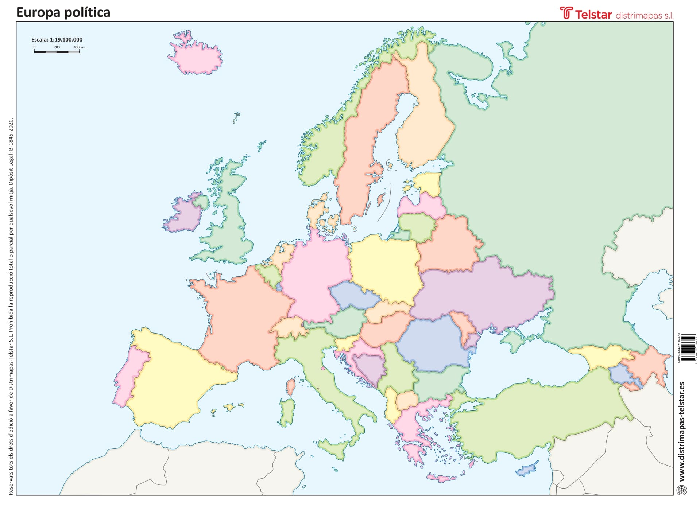

<!-- Image Map Generated by http://www.image-map.net/ -->


<map name="image-map">
    <area href="https://es.wikipedia.org/wiki/España" alt="Spain" title="Spain" target="_blank" coords="358,950,406,964,341,1110,375,1167,468,1172,541,1127,647,1037,389,897" shape="poly">
    <area href="https://es.wikipedia.org/wiki/Francia" alt="France" title="France" target="_blank" coords="521,773,569,843,552,959,636,1012,723,1006,751,987,793,818,692,742" shape="poly">
    <area href="https://es.wikipedia.org/wiki/Italia" alt="Italy" title="Italy" target="_blank" coords="768,939,878,911,906,939,872,981,883,1026,928,1068,1018,1144,931,1242,861,1212,748,987" shape="poly">
    <area href="https://es.wikipedia.org/wiki/Alemania" alt="Alemania" title="Alemania" target="_blank" coords="807,652,948,664,965,762,906,784,926,838,900,869,788,855,777,723" shape="poly">
    <area href="https://es.wikipedia.org/wiki/Polonia" alt="Polonia" title="Polonia" target="_blank" coords="951,666,962,762,1122,838,1147,773,1142,678,1027,638" shape="poly">
    <area href="https://es.wikipedia.org/wiki/Ucrania" alt="Ucrania" title="Ucrania" target="_blank" coords="1142,740,1119,863,1246,843,1260,852,1294,880,1319,908,1493,849,1516,810,1513,765,1355,706" shape="poly">
    <area href="https://es.wikipedia.org/wiki/Rumania" alt="Romania" title="Romania" target="_blank" coords="1122,860,1088,942,1136,1009,1243,1006,1280,998,1291,947,1229,866" shape="poly">
    <area href="https://es.wikipedia.org/wiki/Bulgaria" alt="Bulgaria" title="Bulgaria" target="_blank" coords="1131,1009,1139,1099,1249,1074,1277,1012" shape="poly">
    <area href="https://es.wikipedia.org/wiki/Turqu%C3%ADa" alt="Turquia" title="Turquia" target="_blank" coords="1243,1105,1291,1257,1735,1144,1662,1020,1431,1040" shape="poly">
    <area href="https://es.wikipedia.org/wiki/Bielorrusia" alt="Bielorusia" title="Bielorusia" target="_blank" coords="1198,593,1147,725,1291,740,1310,664,1268,591" shape="poly">
    <area href="https://es.wikipedia.org/wiki/Reino_Unido" alt="Reino Unido" title="Reino Unido" target="_blank" coords="591,439,521,706,667,717,687,675,656,481,639,436" shape="poly">
    <area href="https://es.wikipedia.org/wiki/Irlanda" alt="Irlanda" title="Irlanda" target="_blank" coords="456,532,451,630,529,638,549,560,543,526" shape="poly">
    <area href="https://es.wikipedia.org/wiki/Suecia" alt="Suecia" title="Suecia" target="_blank" coords="1063,152,1024,197,954,312,940,380,942,439,917,501,928,616,985,588,1029,467,1080,310,1119,251,1103,186" shape="poly">
    <area href="https://es.wikipedia.org/wiki/Noruega" alt="Noruega" title="Noruega" target="_blank" coords="909,473,847,504,827,425,822,371,909,321,1024,155,1052,155" shape="poly">
    <area href="https://es.wikipedia.org/wiki/Finlandia" alt="Finlandia" title="Finlandia" target="_blank" coords="1077,147,1159,116,1195,214,1235,338,1192,419,1122,439,1086,394" shape="poly">
</map>